Introduction
Starting A The End
Goal: by the end of the session you will be able to reproduce this graphic from the Economist:

Why ggplot2?
Advantages of ggplot2
- consistent underlying
grammar of graphics(Wilkinson, 2005) - plot specification at a high level of abstraction
- very flexible
- theme system for polishing plot appearance
- mature and complete graphics system
- many users, active mailing list
Who not?
That said, there are some things you cannot (or should not) do With ggplot2:
- 3-dimensional graphics (see the rgl package)
- Graph-theory type graphs (nodes/edges layout; see the igraph package)
- Interactive graphics (see the ggvis package)
What Is The Grammar Of Graphics?
Independently specify plot building blocks and combine them to create just about any kind of graphical display you want. Building blocks of a graph include:
- data
- aesthetic mapping
- geometric object
- statistical transformations
- scales
- coordinate system
- position adjustments
- faceting
The basic idea is that you specify different parts of the plot, and add them together using the + operator.
Example Data: Housing prices
Let’s look at housing prices.
housing <- read.csv("dataSets/landdata-states.csv")
head(housing[1:5])## State region Date Home.Value Structure.Cost
## 1 AK West 20101 224952 160599
## 2 AK West 20102 225511 160252
## 3 AK West 20093 225820 163791
## 4 AK West 20094 224994 161787
## 5 AK West 20074 234590 155400
## 6 AK West 20081 233714 157458(Data from https://www.lincolninst.edu/subcenters/land-values/land-prices-by-state.asp)
ggplot2 VS Base Graphics
Compared to base graphics, ggplot2
- is more verbose for simple / canned graphics
- is less verbose for complex / custom graphics
- does not have methods (data should always be in a
data.frame) - uses a different system for adding plot elements
ggplot2 VS Base for simple graphs
Base graphics histogram example:
hist(housing$Home.Value)
ggplot2 histogram example:
library(ggplot2)## Loading required package: methodsggplot(housing, aes(x = Home.Value)) +
geom_histogram()## stat_bin: binwidth defaulted to range/30. Use 'binwidth = x' to adjust this.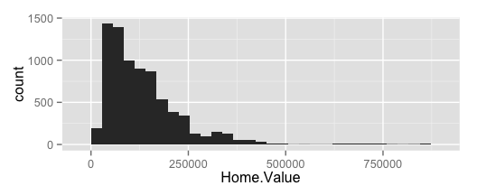
Base wins!
ggplot2 Base graphics VS ggplot for more complex graphs:
Base colored scatter plot example:
plot(Home.Value ~ Date,
data=subset(housing, State == "MA"))
points(Home.Value ~ Date, col="red",
data=subset(housing, State == "TX"))
legend(19750, 400000,
c("MA", "TX"), title="State",
col=c("black", "red"),
pch=c(1, 1))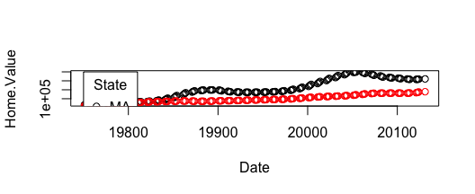
ggplot2 colored scatter plot example:
ggplot(subset(housing, State %in% c("MA", "TX")),
aes(x=Date,
y=Home.Value,
color=State))+
geom_point()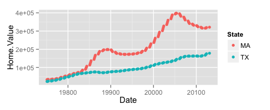
ggplot2 wins!
Aesthetics
Aesthetic Mapping
In ggplot land aesthetic means “something you can see”. Examples include:
- position (i.e., on the x and y axes)
- color (“outside” color)
- fill (“inside” color)
- shape (of points)
- linetype
- size
Each type of geom accepts only a subset of all aesthetics–refer to the geom help pages to see what mappings each geom accepts. Aesthetic mappings are set with the aes() function.
Geometic Objects (geom)
Geometric objects are the actual marks we put on a plot. Examples include:
- points (
geom_point, for scatter plots, dot plots, etc) - lines (
geom_line, for time series, trend lines, etc) - boxplot (
geom_boxplot, for, well, boxplots!)
A plot must have at least one geom; there is no upper limit. You can add a geom to a plot using the + operator
You can get a list of available geometric objects using the code below:
help.search("geom_", package = "ggplot2")or simply type geom_<tab> in any good R IDE (such as Rstudio or ESS) to see a list of functions starting with geom_.
Points (Scatterplot)
Now that we know about geometric objects and aesthetic mapping, we can make a ggplot. geom_point requires mappings for x and y, all others are optional.
hp2001Q1 <- subset(housing, Date == 20011)
ggplot(hp2001Q1,
aes(y = Structure.Cost, x = Land.Value)) +
geom_point()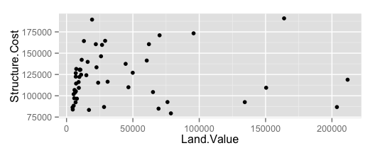
Lines (Prediction Line)
A plot constructed with ggplot can have more than one geom. In that case the mappings established in the ggplot() call are plot defaults that can be added to or overridden. Our plot could use a regression line:
hp2001Q1$pred.SC <- predict(lm(Structure.Cost ~ Land.Value, data = hp2001Q1))
p1 <- ggplot(hp2001Q1, aes(x = Land.Value, y = Structure.Cost))
p1 + geom_point(aes(color = Home.Value)) +
geom_line(aes(y = pred.SC))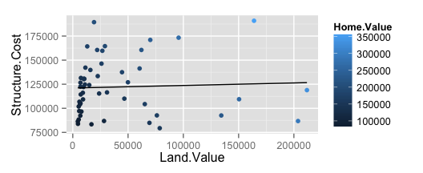
Smoothers
Not all geometric objects are simple shapes–the smooth geom includes a line and a ribbon.
p1 +
geom_point(aes(color = Home.Value)) +
geom_smooth()## geom_smooth: method="auto" and size of largest group is <1000, so using loess. Use 'method = x' to change the smoothing method.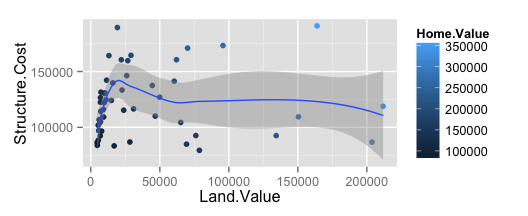
Text (Label Points)
Each geom accepts a particualar set of mappings–for example geom_text() accepts a labels mapping.
p1 +
geom_text(aes(label = State), size = 2)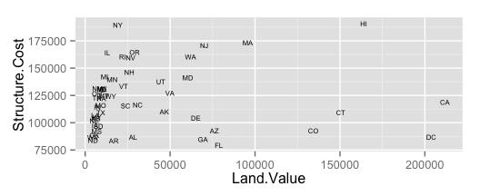
Aesthetic Mapping VS Assignment
Note that variables are mapped to aesthetics with the aes() function, while fixed aesthetics are set outside the aes() call. This sometimes leads to confusion, as in this example:
p1 +
geom_point(aes(size = 2),# incorrect! 2 is not a variable
color = "red") # this is fine -- all points red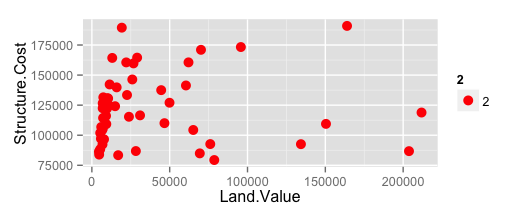
Mapping Variables To Other Aesthetics
Other aesthetics are mapped in the same way as x and y in the previous example.
p1 +
geom_point(aes(color = Home.Value, shape = region))## Warning: Removed 1 rows containing missing values (geom_point).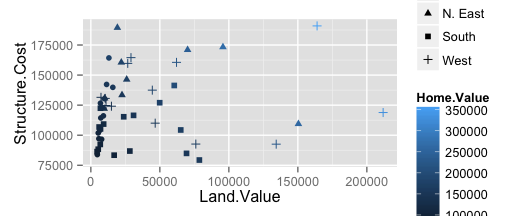
Exercise I
The data for the exercises is available in the dataSets/EconomistData.csv file. Read it in with
dat <- read.csv("dataSets/EconomistData.csv")Original sources for these data are http://www.transparency.org/content/download/64476/1031428 http://hdrstats.undp.org/en/indicators/display_cf_xls_indicator.cfm?indicator_id=103106&lang=en
These data consist of Human Development Index and Corruption Perception Index scores for several countries.
- Create a scatter plot with CPI on the x axis and HDI on the y axis.
- Color the points in the previous plot blue.
- Color the points in the previous plot according to Region.
- Create boxplots of CPI by Region
- Overlay points on top of the box plots
Transformations
Statistical Transformations
Some plot types (such as scatterplots) do not require transformations–each point is plotted at x and y coordinates equal to the original value. Other plots, such as boxplots, histograms, prediction lines etc. require statistical transformations:
- for a boxplot the y values must be transformed to the median and 1.5(IQR)
- for a smoother smother the y values must be transformed into predicted values
Each geom has a default statistic, but these can be changed. For example, the default statistic for geom_bar is stat_bin:
args(geom_bar)## function (mapping = NULL, data = NULL, stat = "bin", position = "stack",
## ...)
## NULL# ?stat_binSetting Statistical Transformation Arguments
Arguments to stat_ functions can be passed through geom_ functions. This can be slightly annoying because in order to change it you have to first determine which stat the geom uses, then determine the arguments to that stat.
For example, here is the default histogram of Home.Value:
p2 <- ggplot(housing, aes(x = Home.Value))
p2 + geom_bar()## stat_bin: binwidth defaulted to range/30. Use 'binwidth = x' to adjust this.The binwidth looks reasonable by default, but we can change it by passing the binwidth argument to the stat_bin function:
p2 + geom_bar(stat = "bin", binwidth=4000)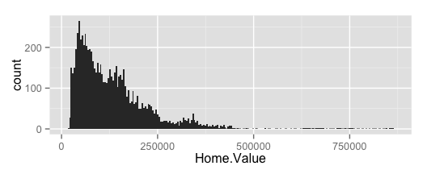
If you’re thinking to yourself “this is crazy, there must be a better way” you can construct the same plot using stat_bin in place of geombar, like this:
p2 + stat_bin(binwidth = 9000, geom = "bar")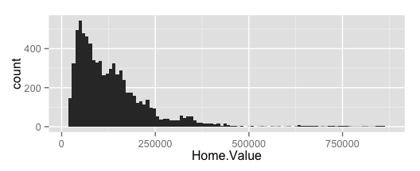
but I prefer to construct my layers with geom_ calls rather than stat_ calls.
Changing The Statistical Transformation
Sometimes the default statistical transformation is not what you need. This is often the case with pre-summarized data:
housing.sum <- aggregate(housing["Home.Value"], housing["State"], FUN=mean)
rbind(head(housing.sum), tail(housing.sum))## State Home.Value
## 1 AK 147385.14
## 2 AL 92545.22
## 3 AR 82076.84
## 4 AZ 140755.59
## 5 CA 282808.08
## 6 CO 158175.99
## 46 VA 155391.44
## 47 VT 132394.60
## 48 WA 178522.58
## 49 WI 108359.45
## 50 WV 77161.71
## 51 WY 122897.25ggplot(housing.sum, aes(x = State, y = Home.Value)) +
geom_bar()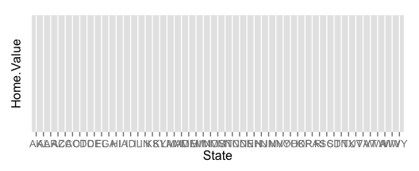
ggplot(housing.sum, aes(x = State, y = Home.Value)) +
geom_bar()What is the problem with the previous plot? Basically we take binned and summarized data and ask ggplot to bin and summarize it again (remember, geom_bar defaults to stat = stat_bin); obviously this will not work. We can fix it by telling geom_bar to use a different statistical transformation function:
ggplot(housing.sum, aes(x = State, y = Home.Value)) +
geom_bar(stat = "identity")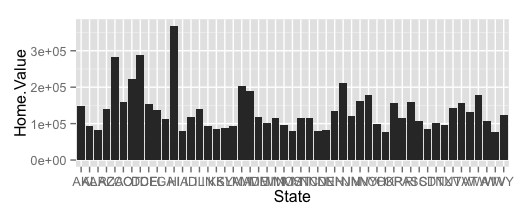
Exercise II
- Re-create a scatter plot with CPI on the x axis and HDI on the y axis (as you did in the previous exercise).
- Overlay a smoothing line on top of the scatter plot using the lm method. Hint: see
?stat_smooth. - Overlay a smoothing line on top of the scatter plot using the default loess method.
- BONUS (optional): Overlay a smoothing line on top of the scatter plot using the default loess method, but make it less smooth. Hint: see
?loess.
Scales
Scales: Controlling Aesthetic Mapping
Aesthetic mapping (i.e., with aes()) only says that a variable should be mapped to an aesthetic. It doesn’t say how that should happy. For example, when mapping a variable to shape with aes(shape = x) you don’t say what shapes should be used. Similarly, aes(color = z) doesn’t say what colors should be used. Describing what colors/shapes/sizes etc. to use is done by modifying the corresponding scale. In ggplot2 scales include
- position
- color and fill
- size
- shape
- line type
Scales are modified with a series of functions using a scale_<aesthetic>_<type> naming scheme. Try typing scale_<tab> to see a list of scale modification functions.
Common Scale Arguments
The following arguments are common to most scales in ggplot2:
- name: the first argument gives the axis or legend title
- limits: the minimum and maximum of the scale
- breaks: the points along the scale where labels should appear
- labels: the labels that appear at each break
Specific scale functions may have additional arguments; for example, the scale_color_continuous function has arguments low and high for setting the colors at the low and high end of the scale.
Scale Modification Examples
Start by constructing a dotplot showing the distribution of home values by Date and State.
p3 <- ggplot(housing,
aes(x = State,
y = Home.Price.Index)) +
theme(legend.position="top",
axis.text=element_text(size = 6))
(p4 <- p3 + geom_point(aes(color = Date),
alpha = 0.5,
size = 1.5,
position = position_jitter(width = 0.25, height = 0)))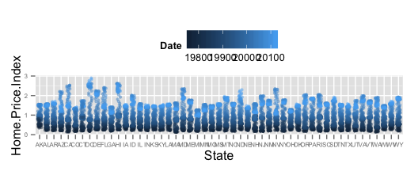
Now modify the breaks and labels for the x axis and color scales
p4 + scale_x_discrete(name = "State Abbreviation") +
scale_color_continuous(name = "",
breaks = c(19751, 19941, 20131),
labels = c(1971, 1994, 2013))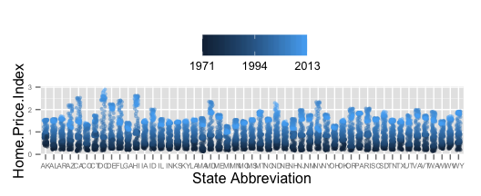
Next change the low and high values to blue and red:
p4 +
scale_x_discrete(name = "State Abbreviation") +
scale_color_continuous(name = "",
breaks = c(19751, 19941, 20131),
labels = c(1971, 1994, 2013),
low = "blue", high = "red")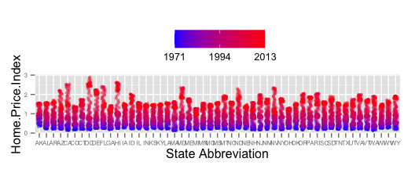
p4 +
scale_color_continuous(name = "",
breaks = c(19751, 19941, 20131),
labels = c(1971, 1994, 2013),
low = scales::muted("blue"), high = scales::muted("red"))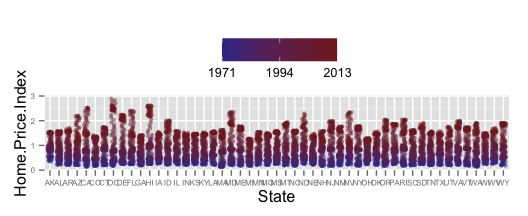
Using different color scales
ggplot2 has a wide variety of color scales; here is an example using scale_color_gradient2 to interpolate between three different colors.
p4 +
scale_color_gradient2(name = "",
breaks = c(19751, 19941, 20131),
labels = c(1971, 1994, 2013),
low = scales::muted("blue"),
high = scales::muted("red"),
mid = "gray60",
midpoint = 19941)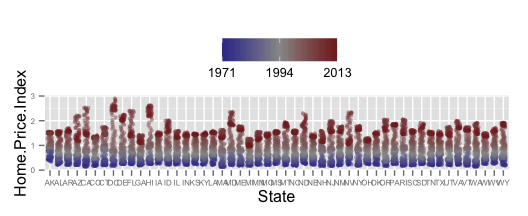
Available Scales
- Partial combination matrix of available scales
| Scale | Types | Examples |
|---|---|---|
| scalecolor_ | identity | scalefillcontinuous |
| scalefill_ | manual | scalecolordiscrete |
| scalesize_ | continuous | scalesizemanual |
| discrete | scalesizediscrete | |
| scaleshape_ | discrete | scaleshapediscrete |
| scalelinetype_ | identity | scaleshapemanual |
| manual | scalelinetypediscrete | |
| scalex_ | continuous | scalexcontinuous |
| scaley_ | discrete | scaleydiscrete |
| reverse | scalexlog | |
| log | scaleyreverse | |
| date | scalexdate | |
| datetime | scaleydatetime |
Exercise II
- Create a scatter plot with CPI on the x axis and HDI on the y axis. Color the points to indicate region.
- Modify the x, y, and color scales so that they have more easily-understood names (e.g., spell out “Human development Index” instead of “HDI”).
- Modify the color scale to use specific values of your choosing. Hint: see
?scale_color_manual.
Faceting
Faceting
- Faceting is
ggplot2parlance for small multiples - The idea is to create separate graphs for subsets of data
ggplot2offers two functions for creating small multiples:facet_wrap(): define subsets as the levels of a single grouping variablefacet_grid(): define subsets as the crossing of two grouping variables
- Facilitates comparison among plots, not just of geoms within a plot
What is the trend in housing prices in each state?
- Start by using a technique we already know (map State to color):
p5 <- ggplot(housing, aes(x = Date, y = Home.Value))
p5 + geom_line(aes(color = State))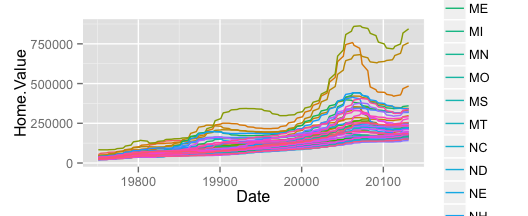
There are two problems here: - there are too many states to distinguish each one by color - lines obscure one another.
Faceting to the rescue
We can remedy the deficiencies of the previous plot by faceting by state rather than mapping state to color.
(p5 <- p5 + geom_line() +
facet_wrap(~State, ncol = 10))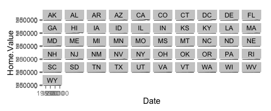
There is also a facet_grid() function for faceting in two dimensions.
Themes
Themes
The ggplot2 theme system handles non-data plot elements such as
- Axis labels
- Plot background
- Facet label backround
- Legend appearance
Built-in themes include:
theme_gray()(default)theme_bw()theme_classc()
p5 + theme_linedraw()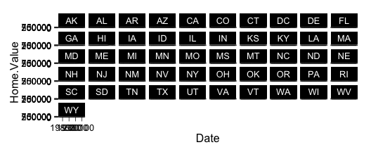
Overriding theme defaults
Specific theme elements can be overridden using theme(). For example:
p5 + theme_minimal()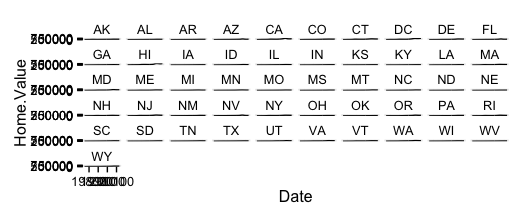
All theme options are documented in ?theme.
Creating and saving new themes
You can create new themes, as in the following example:
theme_new <- theme_bw() +
theme(text=element_text(size = 12, family = ""),
axis.text.y = element_text(colour = "purple"),
axis.text.x = element_text(colour = "red"),
panel.background = element_rect(fill = "pink"),
strip.background = element_rect(fill = scales:::muted("orange")))
p5 + theme_new
The #1 FAQ
Map Aesthetic To Different Columns
The most frequently asked question goes something like this: I have two variables in my data.frame, and I’d like to plot them as separate points, with different color depending on which variable it is. How do I do that?
- Wrong
housing.byyear <- aggregate(cbind(Home.Value, Land.Value) ~ Date, data = housing, mean)
head(housing.byyear)## Date Home.Value Land.Value
## 1 19751 31147.47 4503.784
## 2 19752 31695.22 4611.118
## 3 19753 32246.16 4764.529
## 4 19754 32839.35 4943.176
## 5 19761 33499.86 5082.686
## 6 19762 34164.84 5161.353ggplot(housing.byyear,
aes(x = Date)) +
geom_line(aes(y = Home.Value), color = "red") +
geom_line(aes(y = Land.Value), color = "blue")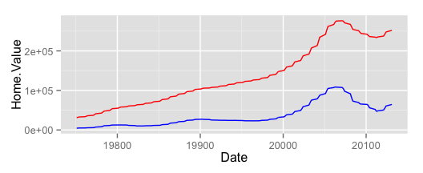
- Right
library(tidyr)
home.land.byyear <- gather(housing.byyear,
value = "value",
key = "type",
Home.Value, Land.Value)
head(home.land.byyear)## Date type value
## 1 19751 Home.Value 31147.47
## 2 19752 Home.Value 31695.22
## 3 19753 Home.Value 32246.16
## 4 19754 Home.Value 32839.35
## 5 19761 Home.Value 33499.86
## 6 19762 Home.Value 34164.84ggplot(home.land.byyear,
aes(x = Date,
y = value,
color = type)) +
geom_line()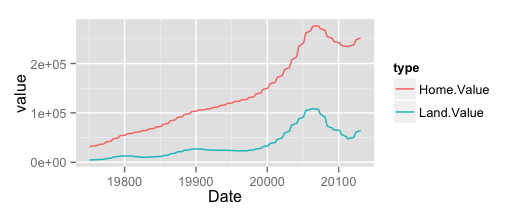
Dynamic
A growing number of libraries
- ggvis
- htmlwidgets
Putting It All Together
Challenge: Recreate This Economist Graph
Graph source: http://www.economist.com/node/21541178
Building off of the graphics you created in the previous exercises, put the finishing touches to make it as close as possible to the original economist graph.
Challenge Solution
Create basic scatter plot
pc1 <- ggplot(dat, aes(x = CPI, y = HDI, color = Region))
(pc1 <- pc1 + geom_point(shape = 1))Challenge Solution
Add labels
label.these <- c("Congo", "Sudan", "Afghanistan", "Greece", "China",
"India", "Rwanda", "Spain", "France", "United States",
"Japan", "Norway", "Singapore")
(pc2 <- pc1 +
geom_text(aes(label = Country),
color = "black", size = 3, hjust = 1.1,
data = dat[dat$Country %in% label.these, ]))Challenge Solution
Add smoothing line
(pc3 <- pc2 +
geom_smooth(aes(group = 1),
method = "lm",
color = "black",
formula = y~ poly(x, 2),
se = FALSE))
#Challenge Solution
Finishing touches
(pc4 <- pc3 + theme_bw() +
scale_x_continuous("Corruption Perceptions Index, 2011\n(10 = least corrupt)") +
scale_y_continuous("Human Development Index, 2011\n(1 = best)") +
theme(legend.position = "top", legend.direction = "horizontal"))Wrap-up
Additional resources
- ggplot2 resources
- Mailing list: http://groups.google.com/group/ggplot2
- Wiki: https://github.com/hadley/ggplot2/wiki
- Website: http://had.co.nz/ggplot2/
- StackOverflow: http://stackoverflow.com/questions/tagged/ggplot
- IQSS resources
- Research technology consulting: http://projects.iq.harvard.edu/rtc
- Workshops: http://projects.iq.harvard.edu/rtc/filter_by/workshops